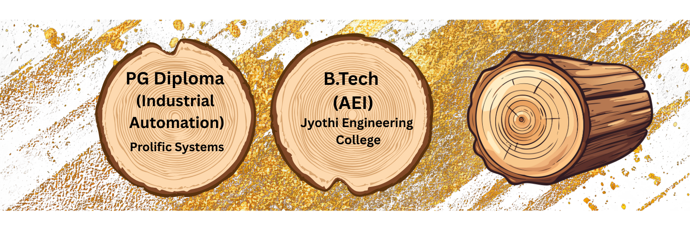
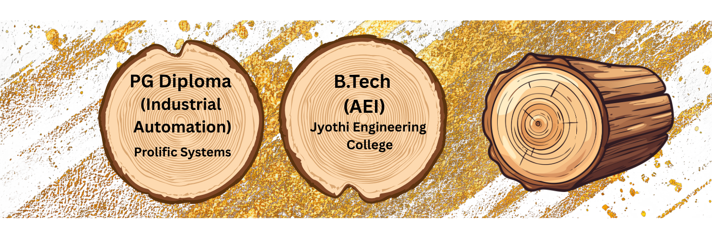

A comprehensive review of digital twin applications in electric vehicles: Evolution, classification, and future directions towards Industry 5.0
Results in Engineering – Q1
Impact Factor – 7.9
Assistant Professor (Junior)
@ Vellore Institute of Technology (VIT)
Research in Battery Management, SoC, SoH, and Sustainable Systems

Vellore Institute of Technology (VIT)
August 2022 – Present
Nehru College of Engineering and Technology
July 2020 – July 2022
Amrita Institute of Medical Science
July 2020 – July 2022
Culture Instruments India LLP
November 2014 – November 2016
 


I hold a B.Tech in Applied Electronics and Instrumentation and an M.Tech in Robotics and Automation from Amrita University. I bring four years of cumulative professional experience, including two years as an Assistant Professor under APJ Abdul Kalam Technological University and two years as a Junior Engineer in automation, where I gained strong exposure to both teaching and industry practices.
I am currently pursuing a Ph.D. in Electrical Engineering at Vellore Institute of Technology (VIT). My research interests span Robotics, Control and Automation, Battery Management Systems, and Electric Vehicles, with a focus on developing intelligent and sustainable engineering solutions.
Results in Engineering – Q1
Impact Factor – 7.9
Journal of Energy Storage – Q1
Impact Factor – 9.8
Results in Engineering – Q1
Impact Factor – 7.9
Sustainable Futures – Q1
Impact Factor – 4.9
IEEE Access – Q1
Impact Factor – 3.6
ICSPCRE-IEEE
Materials today: proceedings
Elsevier